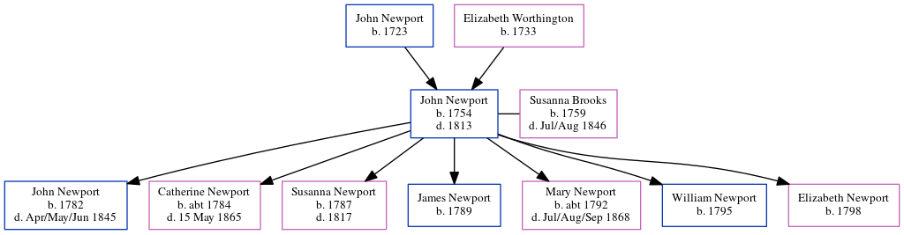

John Newport 1754 - 1813
[ Home ] | [ Calendar ] | [ Surnames Index ] | [ Census Index ] | [ Family History ]The child of John Newport and Elizabeth Worthington, John Newport, the 4 times great-grandfather of Nigel Horne, was born in Upper Hardres, Kent, England in 1754, was baptized there on Dec 22, 1754 and married Susanna Brooks (with whom he had 7 children: John, Catherine, Susanna, James, Mary, William and Elizabeth) in Barham, Kent, England on Oct 22, 17801.
He died in 1813 and was buried in Great Hardres, Kent, England on Feb 11, 18131,2.
Parents
- John was born in 1723
- Elizabeth was born in 1733
Children
- John was born in 1782
- Catherine was born c. 1784
- Susanna was born in 1787
- James was born in 1789
- Mary was born c. 1792
- William was born in 1795
- Elizabeth was born in 1798
Citations
- Public Member Trees Online publication - Provo, UT, USA: The Generations Network, Inc., 2006.Original data - Family trees submitted by Ancestry members.Original data: Family trees submitted by Ancestry members.
- Familysearch.org (www.familysearch.org)
Family Tree
Generated by ged2site. Last updated on Jun 11, 2024